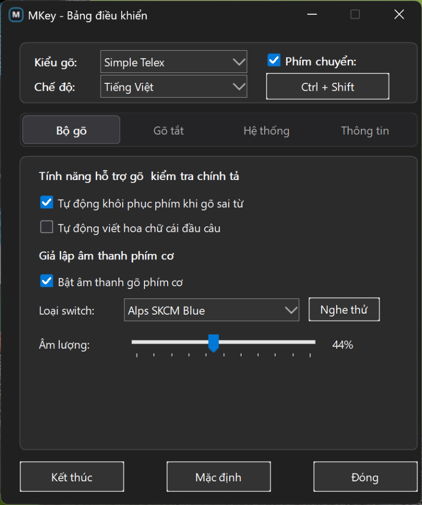
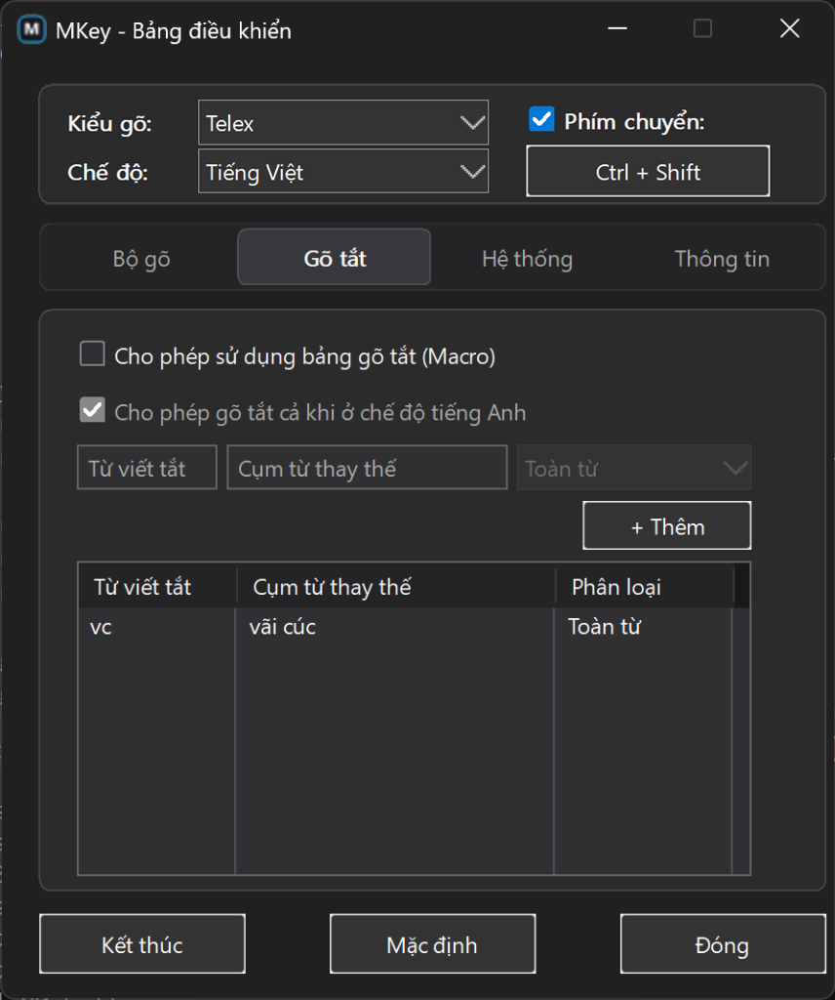
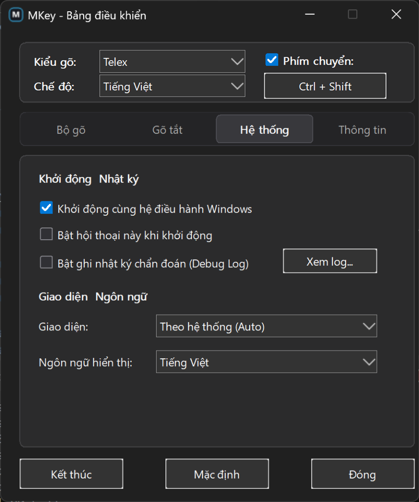
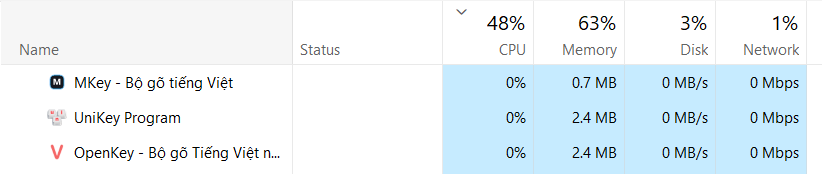
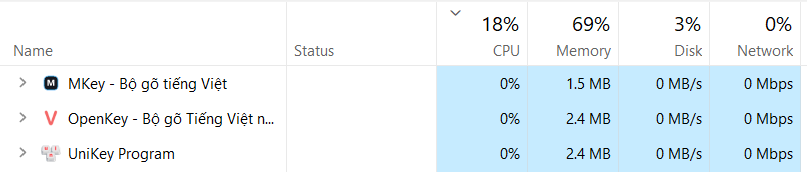

Bộ gõ tối giản, mượt mà và chuẩn xác. Thiết kế để phím bấm luôn theo kịp mạch suy nghĩ của bạn.
So sánh trực tiếp kết quả gõ các từ tiếng Anh thông dụng giữa MKey và các bộ gõ truyền thống.
r thứ hai bị hiểu nhầm là lệnh hủy dấu, nuốt mất chữ thành eror.Tùy biến bảng viết tắt theo thói quen của bạn: đổi hoa/thường cả từ, viết tắt phụ âm đầu hoặc phụ âm cuối.
ko → không.Minh họa 3 cơ chế gõ tắt MKey hỗ trợ — nhấp vào bất kỳ dòng nào để xem cách hoạt động
| Phím tắt | Thay thế bằng | Phân loại | Cơ chế hoạt động & Ví dụ thực tế | Thử nghiệm | |
|---|---|---|---|---|---|
| ko | → | không | Cả từ | Tự động giữ dạng chữ: gõ ko → không, Ko → Không, KO → KHÔNG | |
| dc | → | được | Cả từ | Tự động giữ dấu và viết hoa: gõ dc → được, Dc → Được, DC → ĐƯỢC | |
| vn | → | Việt Nam | Cả từ | Viết tắt cụm từ nhiều chữ: gõ vn → Việt Nam, VN → VIỆT NAM | |
| ng | → | người | Cả từ | Từ thông dụng hàng ngày: gõ ng → người, Ng → Người, NG → NGƯỜI | |
| f | → | ph | Phụ âm đầu | Đi kèm nguyên âm: gõ fa → pha, fong → phong (đứng 1 mình như f(x) không bị đổi) |
|
| j | → | gi | Phụ âm đầu | Đi kèm nguyên âm: gõ ja → gia, jo → gio (nếu gõ thêm dấu: jos → gió, jeengs → giếng) | |
| w | → | qu | Phụ âm đầu | Đi kèm nguyên âm: gõ wa → qua, we → que, wi → qui (nếu gõ thêm dấu: woocs → quốc) | |
| g | → | ng | Phụ âm cuối | Đứng sau nguyên âm: gõ sag → sang, mag → mang, lag → lang (nếu gõ ddag → đang) | |
| h | → | nh | Phụ âm cuối | Đứng sau nguyên âm: gõ tih → tinh, xih → xinh, mih → minh | |
| k | → | ch | Phụ âm cuối | Đứng sau nguyên âm: gõ sak → sach, lik → lich (kèm phím dấu: saks → sách, thiks → thích) |
Giao diện Dark Mode nguyên bản hiện đại, các tab cấu hình rõ ràng, dễ sử dụng ngay từ lần đầu mở.

Ctrl + Shift hoặc tự do đổi sang bất kỳ phím nào (Ctrl + Space, Alt + Z...), có nút bật/tắt riêng.switches\, MKey tự động mở khóa cụm điều khiển switch ngay trong Tab Bộ gõ (chọn switch, nghe thử và thanh trượt âm lượng).

Không còn rừng checkbox kỹ thuật hay những tính năng từ thập niên 90 mà chẳng còn ai dùng. MKey sinh ra để làm đúng một việc duy nhất tốt nhất: gõ phím mượt mà, chuẩn xác và không gián đoạn mạch suy nghĩ.
Thập kỷ này là của chuẩn quốc tế Unicode (UTF-8). Ngày nay, 100% website, trình duyệt, Word, Excel và ứng dụng chat đều dùng Unicode. Việc nhồi nhét hàng chục bảng mã cổ xưa (TCVN3, VNI-Windows, BK HCM, VIQR...) chỉ làm rối mắt người dùng, nặng dung lượng và dễ gây lỗi nhảy font chữ ngoài ý muốn.
Các bộ gõ truyền thống thường phơi bày hàng tá checkbox rối rắm: "Sử dụng clipboard cho unicode", "Cho phép gõ tự do"... cùng hàng loạt thiết lập mở rộng phức tạp khiến người dùng phổ thông không biết phải chọn thế nào. MKey tự động hóa toàn bộ logic thông minh bên dưới — mở lên là dùng hoàn hảo ngay lập tức.
Khi giải phóng phần mềm khỏi hàng nghìn dòng mã cũ kỹ không ai dùng đến, MKey có thể tập trung tối đa vào những thứ thực sự tạo nên sự khác biệt hàng ngày: gõ tiếng Anh không bị nuốt chữ, sửa dấu hồi quy thông minh, giả lập âm thanh phím cơ WASAPI sống động và mức tiêu thụ RAM siêu nhẹ dưới 1 MB.
MKey hiểu cách bạn gõ hàng ngày và tự động xử lý chuẩn xác, để bạn không còn phải bực mình vì lỗi nhảy chữ hay nuốt phím.
hòa, thúy, khỏe (thay vì lối đặt dấu cũ hoà, thuý). Dấu thanh luôn đặt đúng âm chính, không nhảy lộn xộn khi gõ nhanh.ggoogle, ttoán) khi bạn tìm kiếm trên Chrome hay Edge. Mọi thao tác tìm kiếm hay nhập địa chỉ web đều mượt mà ngay từ chữ cái đầu.Ctrl + Shift hoặc tự do đổi sang bất kỳ phím nào (như Ctrl + Space, Alt + Z...). Có cửa sổ nhận diện phím bấm trực quan, nút đặt lại và công tắc bật/tắt chống bấm nhầm khi chơi game.switches\.switches\ trong config. Xem hướng dẫn cài đặt ↓
File chạy MKey được tối ưu siêu nhẹ (~549 KB) nên không kèm sẵn file âm thanh lớn. Hãy làm theo 3 bước đơn giản dưới đây để kích hoạt:
Mở PowerShell (hoặc Terminal) và dán lệnh sau để tự động tải & giải nén vào thư mục config:
irm https://raw.githubusercontent.com/uongsuadaubung/mkey/main/scripts/install-soundpack.ps1 | iex
Hoặc tải file chạy tự động: install-soundpack.bat
Nếu bạn đã clone hoặc tải mã nguồn MKey từ GitHub, chỉ cần copy thư mục switches vào thư mục config:
%USERPROFILE%\.config\mkey\switches\
Ngay khi thư mục switches\ xuất hiện trong config, MKey sẽ tự động mở khóa cụm Giả lập âm thanh phím cơ ngay trong Tab Bộ gõ: cho phép tích chọn bật âm thanh, chọn switch yêu thích (Alps SKCM Blue, Holy Panda...), bấm "Nghe thử" và kéo thanh chỉnh âm lượng trực quan.
Bạn không hề bị giới hạn trong 13 bộ switch có sẵn! MKey cho phép bạn đưa bất kỳ file âm thanh nào bạn thích vào sử dụng — từ tiếng gõ phím cơ custom, máy đánh chữ cổ điển, meme hài hước, cho đến âm thanh anime, lồng tiếng troll :))) Chỉ cần tạo một thư mục mới trong %USERPROFILE%\.config\mkey\switches\<Tên_Gói>\ và thả các file .wav vào, MKey sẽ tự động nhận diện ngay trong Bảng điều khiển.
.wav):space.wav
backspace.wav
enter.wav
tab.wav
delete.wav
shift.wav
ctrl.wav
alt.wav
win.wav
capslock.wav
esc.wav
fn.wav
arrow.wav
home.wav
end.wav
pageup.wav
pagedown.wav
insert.wav
Áp dụng cho: Toàn bộ chữ cái (A-Z), chữ số (0-9) và các dấu câu.
Tên file chuẩn: Đánh số thứ tự 1.wav, 2.wav, 3.wav, 4.wav, 5.wav... (hoặc bất kỳ tên file nào không trùng với 18 phím cố định ở trên).
💡 Tự động luân phiên: Khi bạn để nhiều file số (1.wav, 2.wav...), MKey sẽ tự động đổi tiếng luân phiên sau mỗi lần gõ phím. Nếu bất kỳ phím chức năng nào không có file riêng, MKey sẽ tự động phát âm thanh gõ thường này làm mặc định.
Khởi động ngay tức khắc, chạy ngầm êm ái với mức tiêu thụ tài nguyên gần như bằng không.
Minh chứng trực tiếp từ Task Manager khi chạy song song MKey cùng UniKey và OpenKey:

🔍 Nhận xét: Khi đóng cửa sổ về khay hệ thống (không có mũi tên >), MKey tự động cắt tỉa working set xuống chỉ còn 0.7 MB RAM, tiết kiệm hơn 70% so với các bộ gõ truyền thống.

🔍 Nhận xét: Ngay cả khi đang mở bảng điều khiển (có mũi tên > trong Task Manager), MKey chỉ tiêu tốn 1.5 MB RAM — con số này vẫn nhẹ hơn gần 1 MB so với UniKey & OpenKey.
So sánh cảm giác sử dụng thực tế giữa MKey và các bộ gõ tiếng Việt trước đây.
| Tình huống hàng ngày | Bộ gõ truyền thống | MKey |
|---|---|---|
| Gõ từ tiếng Anh quen thuộc error, pass, coffee, class |
Bị nuốt chữ
Chữ bị biến thành |
Giữ nguyên vẹn
Tự động nhận diện từ tiếng Anh và giữ đúng từ, không nuốt chữ, không cần gõ 3 lần. |
| Tìm kiếm trên Chrome & Edge Gõ từ khóa trên thanh địa chỉ |
Dễ lặp chữ đầu
Thường bị nhảy chữ thành |
Gõ chuẩn xác
Chữ hiển thị chuẩn từng ký tự ngay từ đầu, tìm kiếm hay nhập link web đều mượt mà. |
| Tính năng gõ tắt (viết tắt) Tự động viết hoa / viết thường |
Phải tạo nhiều lần
Muốn gõ tắt cả chữ thường và hoa phải tạo thủ công từng từ như |
Tự động đổi kiểu chữ
Chỉ cần tạo 1 từ |
| Quên bỏ dấu trước khi bấm Space Nhỡ bấm phím cách khi chưa xong dấu |
Phải gõ lại cả từ
Xóa cách rồi gõ dấu sẽ thành |
Tự động thêm dấu
Chỉ cần xóa cách rồi gõ dấu, chữ tự đổi thành |
| Phím chuyển chế độ gõ Chuyển đổi Anh / Việt (E / V) |
Bị bó buộc
Chỉ cho chọn cố định giữa |
Tự do đổi phím 100%
Gán bất kỳ phím nào (như |
| Âm thanh gõ phím cơ Cảm giác âm thanh khi nhấn phím |
Không có sẵn
Phải cài thêm ứng dụng ngoài cồng kềnh, ngốn hàng trăm MB bộ nhớ RAM của máy. |
Hỗ trợ 13 bộ switch
Hỗ trợ phát âm thanh phím cơ sống động qua WASAPI, chỉ tốn ~1.5 MB RAM khi bật và không cần cài phần mềm ngoài nặng nề. |
| Mức độ ngốn máy & RAM Tài nguyên khi mở chạy ngầm cả ngày |
2.4 MB (cố định)
UniKey và OpenKey luôn chiếm từ 2.4 MB RAM trở lên dù ẩn hay mở cửa sổ. |
Chỉ 0.7 MB → 1.5 MB
Khi ẩn cửa sổ chỉ tốn 0.7 MB RAM (nhẹ hơn 70%). Khi mở bảng điều khiển cũng chỉ 1.5 MB (xem ảnh Task Manager ↑). |
| Bảng mã & Tùy chọn cài đặt Mức độ phức tạp khi thiết lập |
Rườm rà, nhiều tùy chọn cổ
Nhiều bảng mã cũ từ thập niên 90 (TCVN3, VNI...) và hàng chục checkbox kỹ thuật rườm rà dễ gây rối mắt và nhầm lẫn. |
Tối giản chuẩn Unicode
Chuẩn Unicode hiện đại 100%. Tự động hóa ngầm toàn bộ cơ chế, không bắt bạn phải làm chuyên gia cấu hình để gõ văn bản mượt mà. |
| Độ mượt mà khi gõ & chơi game Phản hồi khi gõ nhanh hoặc chơi game |
Đôi khi khựng nhịp phím
Dễ xung đột các phím di chuyển khi chơi game nếu quên tắt chế độ tiếng Việt. |
Hoàn toàn mượt mà
Nhạy bén tức thì, phản hồi êm ái kể cả khi bạn gõ văn bản cực nhanh hay chơi game. |
Giải đáp nhanh các thắc mắc phổ biến nhất khi bắt đầu sử dụng bộ gõ MKey.
MKey là phần mềm mã nguồn mở hoàn toàn miễn phí (chưa mua chứng chỉ số đắt tiền hàng năm từ Microsoft), nên khi tải về lần đầu, Windows SmartScreen có thể hiển thị cảnh báo bảo vệ. Bạn chỉ cần nhấn vào "More info" (Thông tin khác) → chọn "Run anyway" (Vẫn chạy). Toàn bộ mã nguồn MKey đều công khai 100% trên GitHub để bạn tự kiểm chứng.
MKey hoạt động tối ưu trên Windows 10 và Windows 11 (64-bit). File chạy là dạng Portable độc lập, không cần cài đặt, không ghi rác vào Windows Registry và không yêu cầu quyền Quản trị viên (Administrator).
Bạn không nhất thiết phải gỡ cài đặt, nhưng cần tắt hoặc thoát hoàn toàn các bộ gõ cũ (UniKey, OpenKey, EVKey...) trước khi bật MKey. Nếu để 2 bộ gõ cùng chạy ngầm song song, cả hai sẽ cùng bắt phím và gây ra lỗi lặp hoặc nhảy ký tự.
Mặc định bạn có thể dùng tổ hợp phím Ctrl + Shift hoặc click chuột trái trực tiếp vào biểu tượng icon V / E ở khay hệ thống. Ngoài ra, trong Bảng điều khiển bạn hoàn toàn có thể tự do đổi sang bất kỳ phím tắt nào (như Ctrl + Space, Alt + Z...) bằng cửa sổ nhận diện phím bấm trực quan, hoặc tắt hẳn phím chuyển nếu không muốn bị bấm nhầm.
Tải bản chạy ngay (portable) mở lên là sử dụng ngay, không cần cài đặt rườm rà. Tương thích hoàn hảo Windows 10 & 11 (64-bit), không cần quyền Quản trị viên (Admin).